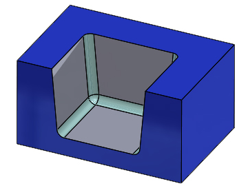
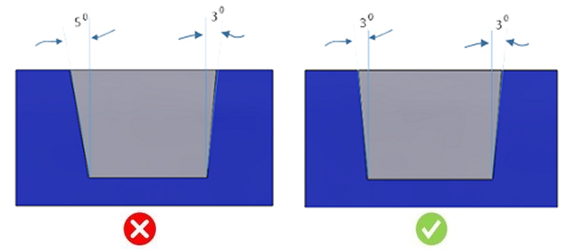

ポケット、ボス、およびスロットの壁面は、一定のテーパ角で定義されている必要があります。
均一なドラフト形状は、高速なフライス加工サイクルを適用することで効率的に加工できます。
多くの場合、わずかな設計要素によって、形状が均一ドラフトから不均一ドラフトに、またはその逆に変化することがあります。
不均一なドラフト形状では 3 軸加工が必要となり、加工時間および製造コストが増加します。

ポケットおよびボスのコーナーフィレットは、適切なフライス工具で加工できるよう、一定のテーパを持たせる必要があります。
垂直壁の場合、コーナーフィレットは一定半径とする必要があります。
テーパ壁の場合、コーナーフィレットは円すい形状とする必要があります。
このルールは、形状を構成する各面のドラフト角が均一であるかどうかを確認します。そのため、構成情報の設定は不要です。
